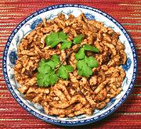

|
Pork Yu ShiangChina - Fujian (East) | ||||
| Serves: Effort: Sched: DoAhead: |
2 main ** 35 min Prep |
Often called "Fish Flavor Pork", Yu Shiang means "Aromatic Fish". No fish is included, but the sauce is similar to that used for fish. The salted radish leaves give it an interesting, almost smoky flavor. | |||
|
1 1-3/4 1/8 ------ 1-1/4 1 1 1-1/2 2/3 1/3 1/8 1/4 ------ 2-1/2 1 |
# oz in --- t T t t t t t c --- T T |
Pork, lean Chung Choy (1) Ginger root -- Sauce Soy Sauce Oyster Sauce Chili Flake (2) Rice Vinegar (3) Salt Sugar Pepper, black Water ------- Oil Rice Wine (4) |
Prep - (25 min)
|